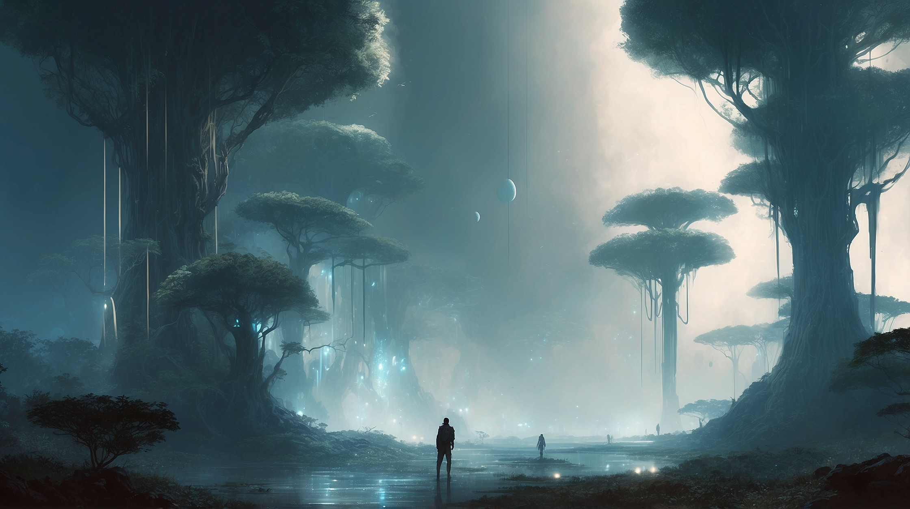
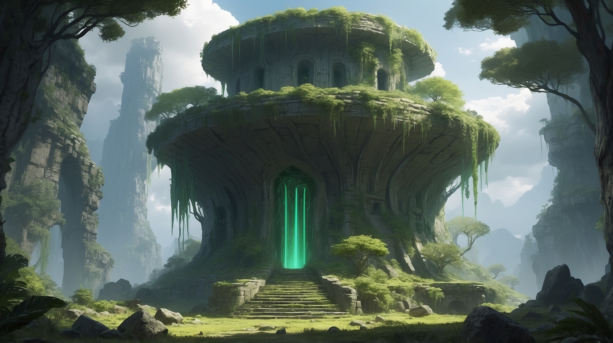

Un Mundo de Misterios y Sombras

Ruinas ancestrales emergen de la niebla eterna
En Lers, la realidad no siempre es lo que parece. Las ruinas de civilizaciones olvidadas salpican el paisaje como cicatrices de una historia que nadie recuerda completamente.
- Ingenieros que forjan máquinas impulsadas por energías que pocos comprenden realmente
- Comunidades que mantienen rituales antiguos, no por tradición, sino por necesidad
- Exploradores que a veces... no regresan de sus expediciones
El Continente de Orone
Fragmento de un antiguo mapa de Orone
El vasto continente de Orone desafía toda lógica conocida. Aquí, la realidad misma parece doblarse y transformarse.
"He visto árboles que danzan con las auroras, bestias que cargan ciudades en sus espaldas, y puertas que llevan a lugares que los mapas no pueden contener." - Del diario de una Guardiana de Umbrales